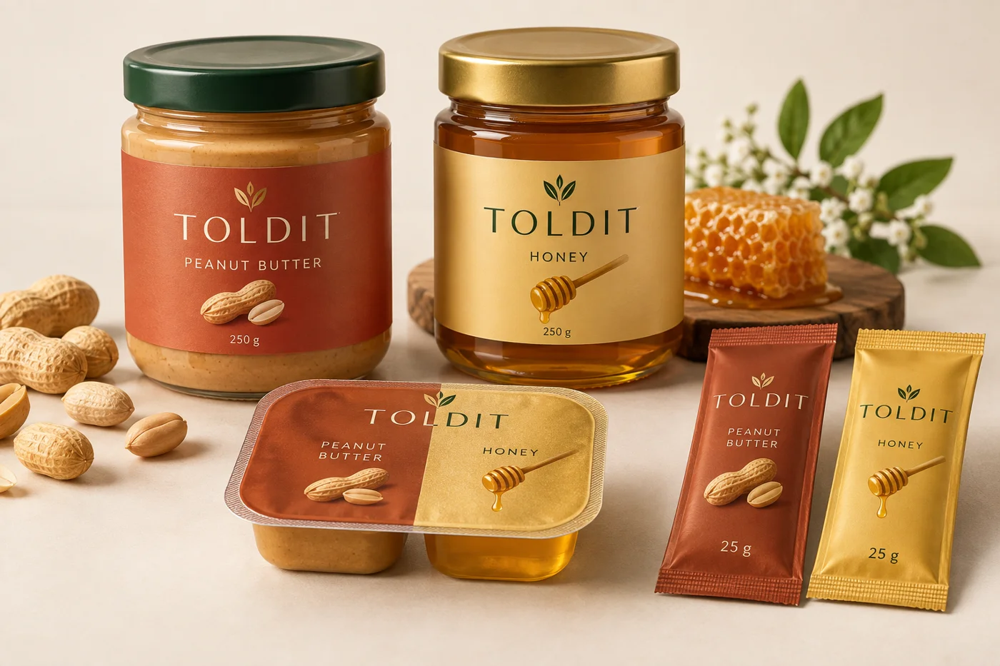

Essentials with purpose
Products designed around the needs of homes, families and communities.
ROOTED IN AFRICA. MADE FOR EVERYDAY.
From the food on your table to the ideas powering tomorrow. Discover a growing family of Toldit products, created around everyday life.
Explore our world
THE TOLDIT COLLECTION / PRODUCT CONCEPTSTHE PRODUCT PORTFOLIO
Discover the ranges we're developing.
Explore a product and inquire directly with our team.
Product imagery illustrates packaging and design concepts. Final specifications, packaging, prices and launch availability may change.
SOUTH SUDAN AT THE SOURCE
Our honey comes from Yambio in Western Equatoria State and Yei in Central Equatoria State, South Sudan. Our peanuts are grown in Lakes State and the Juba and Wau areas of South Sudan.
Discover our food originsONE GROUP. A SHARED AMBITION.
Toldit Group is being built around a simple idea: thoughtful, accessible products can make everyday life better. Our vision begins in South Sudan and reaches across East Africa.
Foods and home care form our foundation. Personal care, clothing, practical technology and new services extend that vision—one considered collection at a time.
Products designed around the needs of homes, families and communities.
A connected family of brands spanning daily necessities and new possibilities.
A South Sudan focus with an ambition to build lasting value across East Africa.
BEYOND THE EVERYDAY
Discover our planned service ventures.
A private-chef and catering marketplace concept bringing people together around food.
Explore conceptA local food delivery platform planned for Nairobi, with a wider regional vision.
Explore conceptA coastal accommodation concept exploring welcoming stays in Comoros.
Explore conceptLET’S BUILD POSSIBILITIES
Our products are still in development. For questions about our planned ranges,
partnerships or distribution, get in touch with Toldit Group.